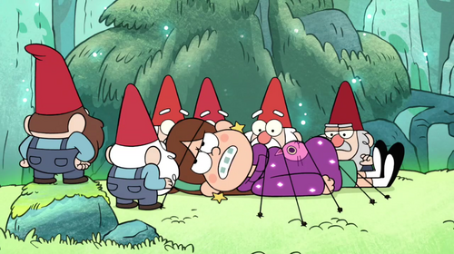

Mabel Pines
Gravity Falls, Oregon
August 31, 1999
Piedmont, California
Non-religious, free-spirited, colorful knit sweaters
Knitting
Miniature Golf
Lock picking
Arts and crafts
"When life gives you lemons, draw faces on those lemons and wrap them in a blanket. Ta-daaa! Now you have lemon babies."
Which season is this?
Sometime early during the month of June, Mabel and her twin brother, Dipper, were sent from Piedmont, California[6] to the small, sleepy town of Gravity Falls, Oregon to visit their great uncle, Grunkle Stan. Mabel believes that this is her "chance to have an epic summer romance," and shows her boy-crazy obsession when she tries to date many local boys before agreeing to date a very mysterious character, who says he is a teenage boy named Norman, in the half-hour Dipper left to hang signs for the Mystery Shack. Little does she know that "he" is actually a group of gnomes, posing as a teenage boy. The gnomes ask her to be their queen and try to kidnap her when she refuses. Dipper aids in Mabel's escape and brings her back to the Mystery Shack on a golf cart. Mabel then defeats the gnomes by using a leaf blower. Stan allows them to take one thing from the Mystery Shack for free, and Mabel decides on a grappling hook,[8] despite her Grunkle's suggestion of a doll.